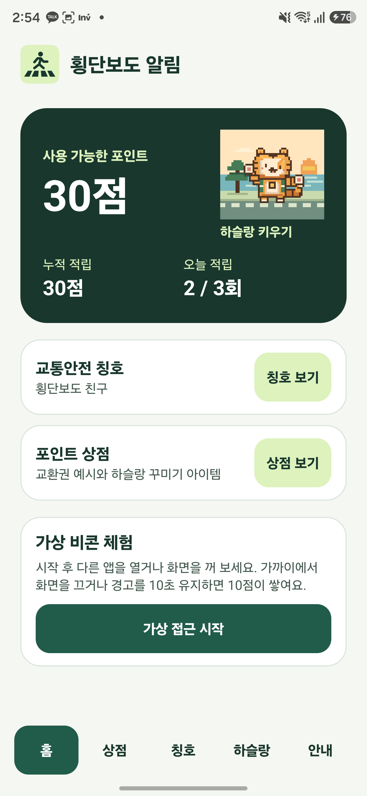

이미 화면을 껐다면
비콘 가까이에서 화면을 끈 상태를 유지해요. 휴대폰을 다시 켤 필요 없이 포인트가 쌓여요.
5난초가 생각한 강릉의 보행 안전
길을 살피는 작은 습관에 포인트가 쌓이고,
하슬랑도 함께 자라요.
“강릉의 보행자들이 어떻게 하면 더 안전하게 길을 다닐 수 있을까?”
5난초 학생들의 토의에서 시작한 경고 알림과 보상체계입니다.
정식 출시 전 시제품 · Android 8.0 이상
설치하면 다른 앱 위에 뜨는 경고를 직접 체험할 수 있어요.
학부모가 자녀의 휴대폰에 설치해 주면 좋겠다는
학생의 생각을 담았습니다.
버튼을 눌러 횡단보도에 가까워져 보세요.
웹 체험은 이 화면 안에서 가상으로 진행돼요.
적립 기준은 간단해요
비콘 가까이에서 화면을 끈 상태를 유지해요. 휴대폰을 다시 켤 필요 없이 포인트가 쌓여요.
“횡단보도 앞입니다. 주변을 봐주세요.” 경고창을 닫지 않고 주변을 살펴요.
실제 안드로이드 시제품
10초 유지 시 10점, 하루 최대 3회.
하슬랑은 누적 기록에 따라 성장해요.
